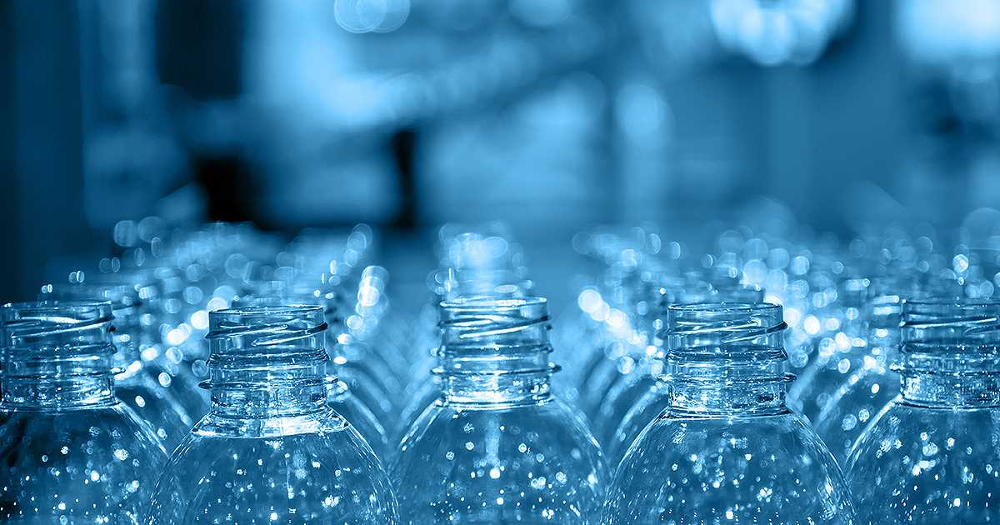
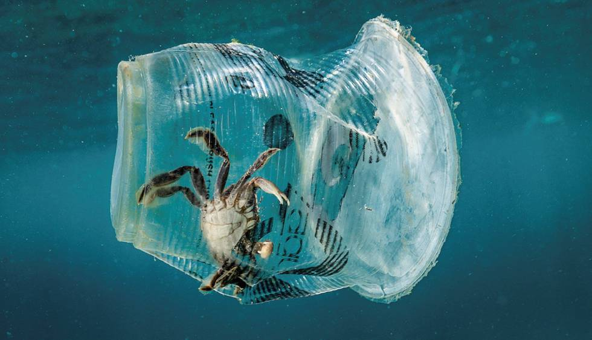

Desde hace más de cincuenta años la industria de las materias plásticas ha tenido un desarrollo inimaginable en los primeros años, que ha superado a la industria del acero. Des de los años 50 los polímeros han entrado en nuestras vidas y palabras como poliestireno, polietileno, cloruro de polivinilo, poliamidas, polimetilmetacrilato, PET, etc. se nos han hecho más y más familiares.El plástico se ha ido incorporando a todas las sociedades igual industrializadas como agrícolas, en los lugares remotos o en las grandes ciudades. Ha servido para vestir, para envasar o para jugar. Ha sido un fenómeno de tal envergadura que nunca en la historia de la humanidad se ha registrado un descubrimiento de desarrollo tan rápido y en proporciones tan inimaginables.  Los plásticos son aquellos materiales que, compuestos por resinas, proteínas y otras sustancias, son fáciles de moldear y pueden modificar su forma de manera permanente a partir de una cierta compresión y temperatura. Un elemento plástico, por lo tanto, tiene características diferentes a un objeto elástico. El plástico proviene, en su mayoría, de la destilación del petróleo. Los plásticos se obtienen mediante la polimerización de compuestos derivados del petróleo y el gas natural. La industria del plástico utiliza el 6% del petróleo que pasa por las refinerías. Los plásticos tienen propiedades que no tienen otros materiales; se destacan porque tienen poco peso y poco color, y gran resistencia a la degradación ambiental. La producción total de plástico en 2016 alcanzó las 335 millones de toneladas. A esta cantidad hay que sumarle las fibras sintéticas que se usan en la ropa, cuerdas, u otros productos, que de forma conjunta representaron 61 millones de toneladas ese mismo año. Se estima que en 2020 se superarán los 500 millones de toneladas anuales, lo que supondría un 900% más que los niveles de 1980.
PET (Tereftalato de Polietileno)
Este es el plástico que podemos encontrar más comúnmente en envases de alimentos como botellas de agua, refrescos, jugos, aceites, etc.Existen muchos tipos de plásticos, aunque el mercado está dominado por cuatro tipos principales:
Polietileno (PE): Bolsas de plástico, láminas y películas de plástico, contenedores (incluyendo botellas), microesferas de cosméticos y productos abrasivos.
Polyester (PET): Botellas, envases, prendas de ropa, películas de rayos X, etc.
Polipropileno (PP): Electrodomésticos, muebles de jardín, componentes de vehículos, etc.
Cloruro de polivinilo (PVC): Tuberías y accesorios, válvulas, ventanas, etc.
La mayor parte de los plásticos se emplean en la fabricación de envases, es decir, en productos de un solo uso. En concreto en Europa la demanda de plásticos para envases fue del 39.9% en 2016. Posteriormente serán estos envases los objetos de plástico que encontremos con más frecuencia en el medio ambiente, dañando los ecosistemas marinos.
En la actualidad, se utilizan para fabricar y envolver muchos de los productos que compramos y consumimos. El problema llega cuando ya no lo queremos, esto ocurre sobre todo con el plástico desechable de embalar y envasar. El plástico se utiliza porque es fácil y barato de fabricar y porque dura mucho tiempo. Lamentablemente, estas mismas ventajas hacen que se convierta en el aliado número uno de la contaminación. Su bajo precio hace que uno se deshaga rápidamente de él, y su larga existencia hace que perdure en el medioambiente durante largos periodos de tiempo, en los que puede causar grandes daños. Ya que no puede descomponerse y se necesita una alta energía de rayos ultravioleta para acabar con él, la cantidad de plástico que se desperdicia en los océanos está aumentando considerablemente. El plástico actúa como un imán en sustancias tóxicas como el DDT o los PCB. Los investigadores han descubierto que las concentraciones de estas sustancias químicas son millones de veces más altas en el plástico que se utiliza en el mar que en el que se utiliza en el agua circundante, que ingerido por animales, puede hallarse en toda la fauna marina, incluso en el plankton, la clave de la cadena alimentaria marina.
Los plásticos son uno de los principales factores de contaminación ambiental, el cual provoca problemas en la salud.
La polución por plástico puede potencialmente envenenar a los animales, lo cual puede afectar de manera negativa el suministro de alimentos del ser humano. La contaminación por plástico es altamente dañina sobre los grandes mamíferos marinos, tales como las tortugas de mar
El plástico puede tardar hasta 1000 años en degradarse, provocando múltiples daños en el ecosistema.